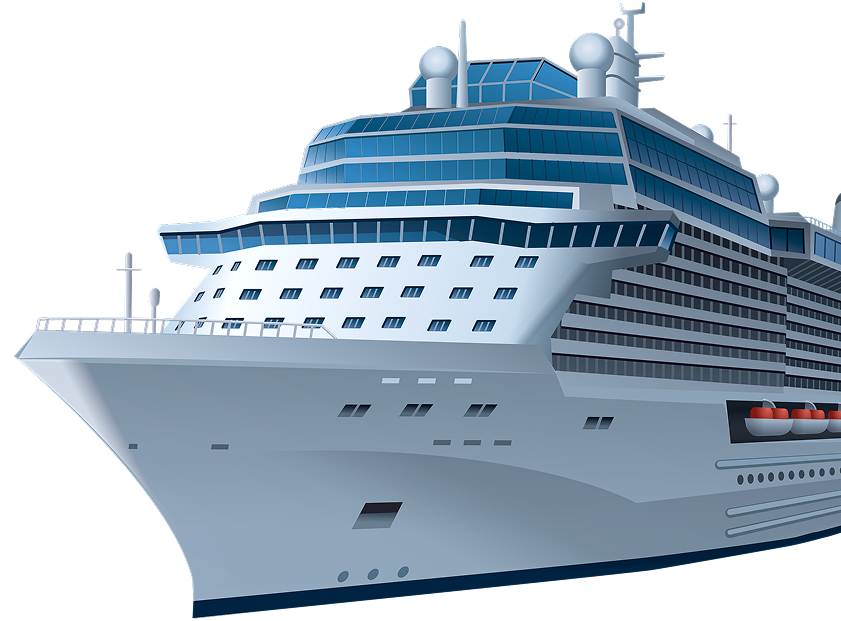
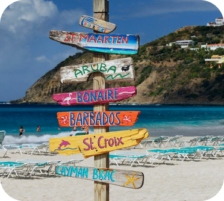
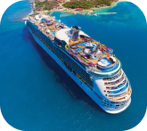
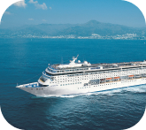
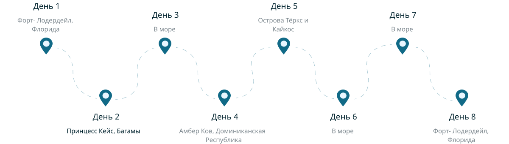
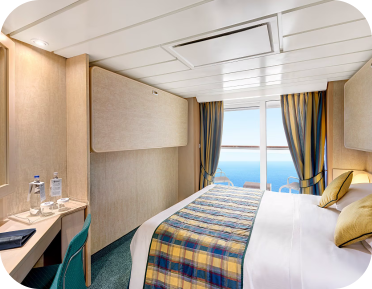
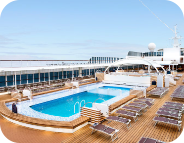

Круиз «В сердце Карибского Моря»
Окунитесь в морскую атмосферу и откройте для себя потрясающие пляжи и первоклассный сервис
Забронировать тур

О круизе
Круиз по карибским островам на роскошном лайнере MSC Armonia начинается 6 апреля 2025 г и длится 8 дней. Во время путешествия вы побываете в различных странах. В Доминиканской Республике вы будете исследовать исторические города, насладитесь прекрасными пляжами и сможете погрузиться в местную культуру. В Багамах открывается возможность окунуться в удивительный подводный мир, а на островах Тёркс и Кайкос можно отдохнуть в уединении, наслаждаясь идеальными бирюзовыми водами и спокойной атмосферой.
Кроме того, на круизе предлагаются разнообразные активности, включая шоу, дискотеки и тематические вечера. Гастрономический опыт представлен на высшем уровне с разнообразными ресторанами и кафе, предлагающими блюда местной и мировой кухни. Кроме того, на борту доступны спа-услуги, тренажерные залы и другие удобства для полноценного отдыха и релаксации.



Наш уникальный маршрут

Лайнер MSC Armonia
MSC Armonia — это стильный лайнер, вмещающий до 2679 пассажиров. На борту предлагается широкий выбор кают, включая люксы с балконами и удобные семейные каюты. Рестораны предлагают разнообразные кулинарные изыски, включая блюда различных кухонь мира, а также тематические вечера и гастрономические события. На лайнере также размещены множество баров и лаунджей для отдыха и общения. Для развлечения на борту есть театр, казино, дискотеки и разнообразные шоу. Бассейны и спа-центр позволяют пассажирам расслабиться и насладиться полноценным отдыхом.




- 3000 пассажиров
- 976 кают
- 13 палуб
фотогалерея


Отзывы о круизе «В сердце Карибов»
забираемся на борт мечты!
Ближайшие даты круиза «В сердце Карибского моря»
Оставьте свой номер телефона, и наш менеджер поможет вам забронировать тур